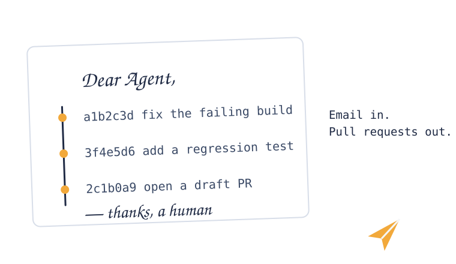

Dear Agent
Dear Agent, here’s your task.

An async, email-first inbox that turns messages into Git pull requests produced by coding agents. Send an email; an agent works in its own worktree; the result comes back as a pull request you review. No source code travels over the transport.
Async by design
Send a task and disconnect. Work survives restarts and results wait in an inbox.
No code over the wire
Only metadata and links travel; every result is a reviewable draft PR.
Pluggable
OpenCode, Claude Code, Codex, or a custom runner; hosted or local models.
Human-gated
Approvals land in an action queue; main is never written by an agent.